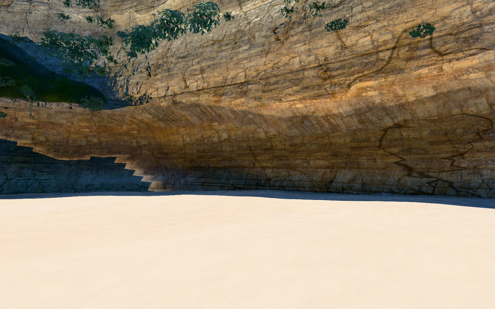
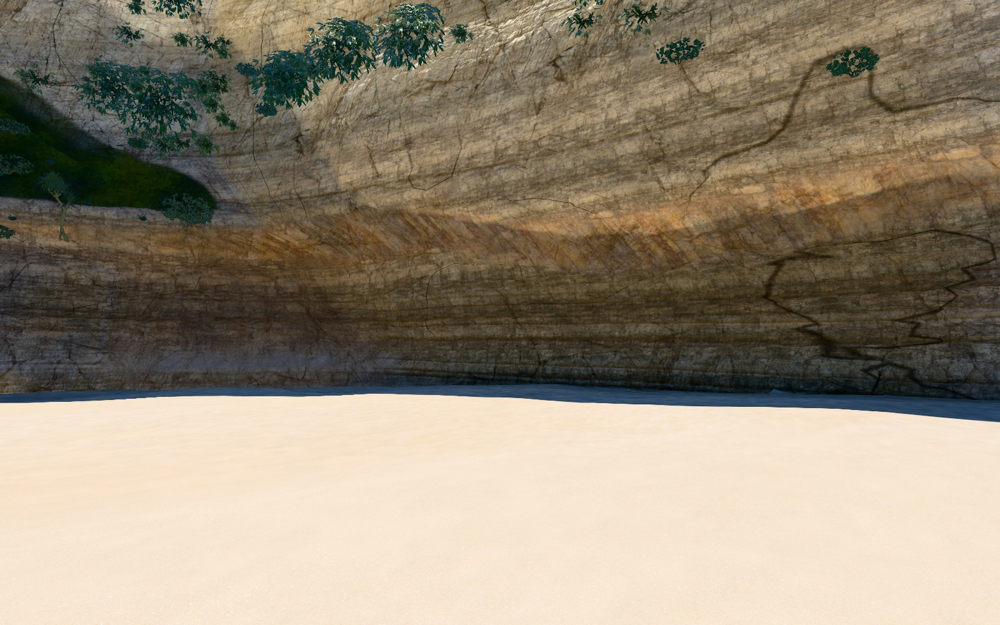

<!doctype html><meta charset="utf-8"><style>*{box-sizing:border-box}body{margin:0;background:#191c1c;color:#ecece7;font:16px system-ui}header{height:42px;padding:10px 18px}main{display:grid;grid-template-columns:1fr 1fr;gap:2px}h2{font-size:16px;font-weight:500;margin:0;padding:10px 18px;height:38px}figure{margin:0;height:350px;overflow:hidden}img{display:block;width:100%;transform:translateY(-70px)}footer{padding:14px 18px;color:#b8c0be}</style><header>Right beach wall · same camera and lighting</header><main><section><h2>Before</h2><figure></figure></section><section><h2>After</h2><figure></figure></section></main><footer>Continuous lighting around the recess · finer weathered limestone · varied mineral staining</footer>